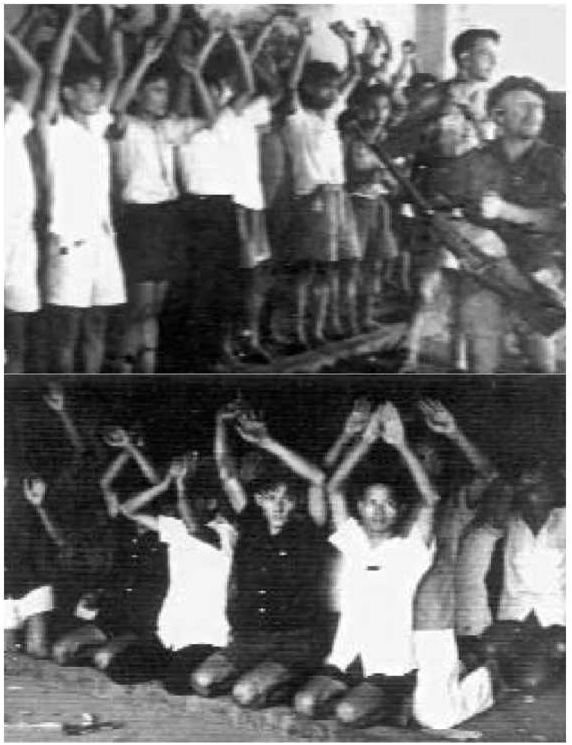

Từ tháng 9 năm 1945, cuộc chiến tranh 30 năm đột khởi ở Sài Gòn, cuộc sát nhân vĩ đại, máu sông xương núi chỉ ngưng khi lực lượng đế quốc rờikhỏi Việt Nam, quân Pháp năm 1954, quân Mỹ năm 1975.
Quân Anh-Pháp tấn công
Ngày chủ nhật 23 tháng chín 1945, vào hồi 4 giờ sáng, dựa vào lực lượng quân Gorkha, binh lính Pháp được vũ trang lại đi tái chiếm những công sởchính: Sở Mật Thám, Kho Bạc, Nhà Giây Thép [Bưu Điện], Dinh Xã Tây, nơichính quyền Việt Minh đóng trụ sở tạm thời.

Thanh niên bị bắt giữ tại Sở Mật Thám Pháp
Sự hợp tác nào vậy? Trưởng Ban Tham Mưu Nhật là Numata công nhậnrằng có hơn một trăm người Nhật đã đào ngũ chạy sang phía An-nam vàmột số người Nhật khác đã bán vũ khí cho người An Nam.
Báo Tin Điện Hằng Ngày (Daily Telegraph) bữa 4 tháng 10 có kể lại mộttrận đánh coi như quân khởi nghĩa đã đem đại lực đánh trả thù chống ngườiNhật đàn áp: 500 người khởi nghĩa tấn công khu vực phía Bắc Sài Gòn bỏlại 50 xác chết.
Báo Manchester Guardian ngày 27 tháng 10 cho là ‘’thật quái gở’’ việcngười ta sử dụng quân Nhật để‘’thanh toán’’ một số khu vực, nhưng rồicũng nhấn mạnh về sự thiếu lực lượng của quân Đồng Minh tại chỗ để có thể duy trì trật tự.
Lực lượng không quân quan sát cho biết có thấy hàng ngàn quân khởinghĩa tập trung trên đường Sài Gòn-Mỹ Tho, và tờ Tin Điện Hằng Ngày ngày 1 tháng 10 đề tựa: ‘’Lực lượng không quân có thể nhanh chóng đánhtan cuộc khởi nghĩa’’.
Trong tuần chót tháng 9, tuần lễ đẫm máu, ýnghĩđình chiến phát sinh.
Cuộc đình chiến trở thành thực sự ngày 2 tháng 10.
Đình chiến
Ngày 3 tháng 10 năm 1945, tại Tổng Hành Dinh của Ủy Hội Đồng Minh,Gracey, Cédile, đại diện Tướng Philippe Leclerc và ba đại biểuViệt Minh là Phạm văn Bạch, Bác Sĩ Phạm ngọc Thạch và Hoàng quốc Việt tiến hành cuộc họp đầu tiên. Trong khi đó tại đường Catinat, đám đông người Pháp reo hò hoan hô lên nghinh đón các đoàn lính xung kích của quân đội viễn chinh đi diễu hành, trong lúc các tàu chiến đang tiếp tục thả quân đổ bộ. Không mộtbóng người bản địa nào, việc xảy ra ngày 23 tháng 9 còn nóng bỏng trongtrí nhớ. Khi đi qua đường phố đó, Hectrich đã nhận xét một cách buồnchán: ‘’Phải chăng chúng ta đang sống trong một Đông Dương không cóngười Đông Dương?’’.
Cũng ngày hôm đó, nhóm Tranh Đấu phát hành tờ báo Kháng Chiến tại Tỉnh Chợ Lớn, lên tiếng kêu gọi dân chúng đừng ảo tưởng về thiện chí của ngườiPháp, phải luôn luôn sẵn sàng đấu tranh vũ trang chống lại bọn đế quốc.
Liệu ủy ban nhân dân Nam Bộ có còn hy vọng ‘’tiến triển thương lượng’’ thành công như Trần văn Giàu đã hứa hẹn ngày 22 tháng 9 haykhông? Hai phía đều đưa ra điều kiện: Cédile buộc phải thả các người bịcầm làm con tin và hoàn lại xác của Trung Tá Dewey; Việt Minh đòi được côngnhận nền độc lập nước Việt Nam. Sài Gòn vẫn bị bao vây và sắp chết ngộp;lệnh bãi công chưa rút lại. Đàm phán thất bại...
Trong khi đó, ngày 5 tháng 10, Trung Tướng Philippe Leclerc đến Sài Gòn, đóng trụ sởtại Dinh Toàn Quyền. Y tuyên bố toàn bộ hạm đội Pháp có thể huy độngđược sắp tới nơi, cùng xe tăng, liên thanh tự động và binh lính, đồng thời cóthêm 12 000 línhGorkha cũng sắp tới. Philippe Leclerc nói trước là sẽ ‘’ổn địnhtình hình trong vòng một tháng’’!
Ngày 11, một sĩ quan Anh, một người Ấn và ba línhGorkha rơi vào một ổ phục kích ở Thạnh Mỹ Tây, phía Đông-Bắc Sài Gòn. Cuộc đìnhchiến giây giưa mới một tuần lễ.
Khuya ngày 12, hàng loạt đạn súng liên thanh ầm ĩ, tiếng lựu đạn nổ vang, cùng những loạt súng cối đánh thức dân chúng đang mê giấc. Một đại đội línhGorkha tiến vào Gia Định và Gò Vấp, vùng ngoại ô phíaĐông-Bắc và Tây-Bắc Sài Gòn. Họ bắt giữ khoảng 50 người An Nam,3 người đàn bà trong đó có một nữ y tá. Trong khi línhsăn đá Pháp Binh Đoàn thuộc địa số 5 đánh vô Phú Mỹ ở phía Đông thì một Liên Đội khácgồm línhAnh-Ấn cố sức giải tỏa khu vực Chợ Lớn, miền nầy vẫn trong tayquân Bình Xuyên. Hàng tốp línhsăn đá vô lại châm lửa đốt mấy xóm nhà lá chen chúc quanh vùng không chừa khóm nào cả.
Đoàn công binh tác chiến
Sau khi mật trận Thị Nghè-Gia Định tan vỡ, Đoàn Công Binh Sở Xe Điện rút về Gò Vấp, nhưng ít hôm sau phải kéo lui, trước tấn công quân Anh-Ấn-Pháp. Ở An Phú Đông, anh thợ may Hồ Văn Đức tử trận đầu tiên, anh gốcở Mỹ Tho, đã gia nhập hàng ngũ công binh; Trần Văn Nghị, thuộc Đoàncảm tử số 1, trong lúc đương đầu quân Anh-Ấn-Pháp (Gia Định) đồng cùngcác nhóm du kích tự động, tự xưng Đội Trần Cao Vân, Đào Duy Từ, Chi Lăng, Đoàn Nguyễn An Ninh..., nhưng họ không ngớt ghình nhau.
Giữa tháng 11 đoàn công binh chia làm hai tốp, tốp đi bộ không vũ khí, phòng địch quân kiểm soát, tốp theo đường thủy, rút lên Lộc Giang, nơi Nguyễn Hòa Hiệp đóng binh, cận biên giới Cao Miên. (Ai cũng biết Hiệptrước kia ở tù chung một khám với Nguyễn An Ninh, có thiện cảm với Tạ Thu Thâu, thời Nhật chiếm đã chứa Trần văn Giàu).
40 chiến sĩ thợ Xe ĐiệnGò Vấp đi bộ không vũ khí tới Lộc Giang có thể, buộc mình thương lượng cộng tác với Đệ Tam sư đoàn, mặc dầu trong lòng ái ngại. Không phải vì Hiệp xu hướng quốc gia, chỉ vì Đệ Tam sư đoàn tổchức theo lối quân phiệt như một đạo binh tư sản, đẳng cấp, nghịch hẳnvới cao vọng dân chủ công binh.
Anh em công binh tham gia phòng tuyến Việt-Cao. Những anh em còn lại, ngoài công tác chiến phòng, họ làm quen với nông dân trong vùng ấp Truông Dầu, tổ chức hội hiệp và cố sức giải thích mục đích thợ thuyền vàdân cày tranh đấu không phải chỉ ‘’đuổi Tây’’, mà còn phải cởi ách tư sảnbản xứ và điền chủ, thoát cảnh đói rách lầm than, không hy sinh để thaythầy đổi chủ.
Còn 13 đồng chí đi đàng sông chở súng đạn, khi tới Mỹ Hạnh, trụ sở‘’giải phóng quân’’, bị ủy ban kháng chiến sở tại bắt lại. Sau khi thảo luậncùng nhau, anh em ưng thuận cộng tác với lực lượng quân sự sở tại. Tiểuđội của họ cử anh Chín Nghè chỉ huy, vẫn chào cờ đỏ của mình. - Lúc ấyNguyễn Bình đã vào Nam, thọ sứ mạng Hà Nội thống nhất và chỉ huy lựclượng kháng chiến khu 7. ‘’Dân quân’’ cải danh là ‘’Giải phóng quân’’.
Cùng các đoàn du kích giải phóng quân sở tại, tiểu đội tác chiến tại Cầu Lớn, chống đoàn xe thiết giáp Pháp từ Bà ĐiểmHóc Môn kéo tới. Ròng rã chịu đựng suốt một đêm rồi rút về ấp Bàu Tràm. Nơi đây, từ7 giờ sáng đến 10 giờ, Bàu Tràm khói lửa, ầm ỹ bom nổ đạn mưa khôngngớt mỗi lượt máy bay đâm xuống oanh tạc. Chị Quý, ban cứu thương,anh Thiện, anh Đồng ngã dưới lằn mưa đạn liên thanh. Trần Quốc Kiểu, Lê Văn Hướng cùng sáu anh chiến sĩ trong đoàn Việt kiều lao động trong đồnđiền Tây Ninh vong mạng trong các trận vừa qua.
Mỹ Hạnh thất thủ, anh em sống còn chạy về Lộc Giang, trong đó cóhai chị và anh Trần văn Thanh, ban cứu thương, anh S., quần tụ cùng anhem đang tá túc trong Đệ Tam sư đoàn. Đêm đánh chiếm Thốt Nốt(Socnok,Cao Miên) bên kia biên giới, có đoàn Việt kiều trợ lực, đánh lui quân Miên. Rạng Đông quân Pháp tiếp vận ào tới, S. với khẩu FM giữ Cầu ngã tư Thốt Nốt bắn lùi hai xe thiết giáp, che chở công binh rút vềcăn cứ. Thanh bị địch giết bỏ thây trong một bụi tre. Hôm sau quân Pháptấn công Lộc Giang, Đệ Tam sư đoàn kéo vô Đồng Tháp Mười.
Liền sau Sài Gòn bạo động, Nguyễn Văn Lịnh, Nguyễn Văn Nam vàNgô Văn Xuyến tập họp tại nhà Xuyết ở xóm Tân Lộ, cách Thủ Đức 4 kmvề phía Đông, liên lạc cùng Đoàn Công Binh Xe ĐiệnGò Vấp thông quađồng chí Lê Ngọc. Họ thảo một văn bản chính trị giải thích lập trườngchiến đấu của nhóm Liên Minh và Đoàn Công Binh. Nếu bọn trinh sát củaDương bạch Mai đến bắt họ, họ sẽ dùng vũ khí chống lại. Họ nối gótCông Binh đang cùng Đệ Tam sư đoàn rút lui vào Đồng Tháp Mười, theodấu chân nghĩa quân thế kỷ trước, nơi mà các xe thiết giáp không thể laovào.
Đây là một nơi cực kỳ nghèo đói, chúng tôi đã gặp một cặp vợ chồngchung nhau có một cái quần, bằng...bao bố, lấy từ một bao tải gạo. Thế nhưng chúng tôi vẫn được tiếp đón rất nhiệt tình. Từ sau cuộc nông dânkhởi nghĩa năm 1940, để tránh bị đàn áp vì tình nghi là cộng sản, rấtnhiều bần dân miền nầy ra mặt theo ĐạoCao Đài, hoặc nhập Đạo HòaHảo lập bàn thờ Phật Thầy.
Đoàn ghe thuyền chở hằng mấy trăm lính Đệ Tam sư đoàn theo kinhtiến sâu vào vùng mênh mông đầm lầy đầy ngập nước phèn. Cấm trại trênbờ kinh, đào hầm ẩn núp vừa xong, máy bay Pháp tới bay đi lượn lại. Bom nổ vang ầm, đạn liên thanh khạc xuống như mưa bấc, nóc lá bốc lửa bừng lên, khói tỏa mịt trời. Tội nghiệp bao nhiêu dân nghèo ở đây buộclòng tiếp quân kháng chiến trong túp lều lá của mình, thấy nhà cửa, aocá, vườn tược, tiêu tan tro khói.
Được giao nhiệm vụ đi tìm một máy thu thanh, Xuyết bị bắt trên sôngVàm Cỏ, nơi mà Thầy Giáo Nguyễn Văn Trọng ở Tân An tự tôn tỉnh trưởngViệt Minh. Bị giam cùng với khoảng ba chục người ‘’bị tình nghi’’ tại Đìnhthờ Thần Hoàng Mỹ Phước, anh chứng kiến cuộc xét xử nhanh chóngrồi đem ra bắn ba người theo Đạo Thiên Chúa trốn khỏi Tân An khi quân Pháp đếnchiếm, họ bị tình nghi là làm gián điệp cho Pháp. Sau đó hai tên lính kín cũđược thu nhập vào công an Việt Minh, đâm ra hành động khiêu khích, bị xửtử. Ngày bắn hai tên nầy, dân làng được mời đến xem đông đảo đểhoan hô‘’công lý’’ của tỉnh trưởng Trọng. Tối hôm đó, Xuyết nghe bên kia bức vách gỗ ngăn gian phòng phía sau Đình, ầm ĩ những tiến rú lên vì bị đấm đá túi bụi, lẫn lộn giọng người khóc lóc kêu oan Trời đất ơi! Trời đất ơi! Đó làmột gia đình nông dân nghèo bị hai tên lính kín nói trên phao là gián điệpkhi họ chèo thuyền chở khoai trở về nhà.
Xuyết tìm được một mẩu giấy, viết vội lên đó vài dòng về quá khứ của mình và mục đích của cuộc chiến đấu của anh hiện tại; nếu như đời sốngcủa anh chấm dứt tại đây, có thể sẽ có người đọc được mảnh giấy đó vàsuy nghĩ. Độ ba tuần sau, anh từ giã Đình Mỹ Phước, một tên cảnh sátmang súng chèo ghe chuyển anh đi xa vô trong nữa, đến một nhà thờ lợplá ở Sông Xoài, ngận nước từ Đồng Tháp đổ ra sông Vàm Cỏ. Nhà thờ nàybiến thành nơi giam tù chính trị, anh lại gặp các bạn của nhóm La Lutte, trong đó có anh Kinh Lý Thu ở Mỹ Tho, người đã giúp nông dân đo đạcphân chia ruộng đất. Cai tù là một tên từ Côn Đảo trở về, vũ khí đầymình. Thật là một sự tình cờ may mắn đưa Đệ Tam sư đoàn kéo đi qua đó, thế là tù nhân được phóng thích.
Đoàn Công Binh tự hỏi viễn đích cuộc kháng chiến, nhận thấy cần có đồng chí trở về Sài Gòn, lo việc liên lạc chánh trị, để vạch con đườngtương lai. Một số đồng chí rời đoàn về châu thành, trong đó có Lê Ngọc,liên lạc viên, Lê Ký sốp phơ công binh và Nguyễn Văn Hương, mười bốntuổi, trước học nghề thợ trong xưởng Xe ĐiệnGò Vấp. Trên đường về SàiGòn, sau khi bị quân đội Pháp bắt giam ở Hóc Môn trong một cuộc tảothanh, rồi được thả ra, cả ba đồng chí đều bịViệt Minh bắt giết vu khốnglà ‘’Việt gian’’.
Chúng ta trở lại trận địa vùng Sài Gòn.
Tờ Tin Điện Hằng Ngày, bữa 15 tháng 10 năm 1945, cùng tờ Thời Báo (Times) ngày 16 đưa tin về lực lượng người bản địa phản công: Từ ngày 13,ba đơn vị người An Nam đã thâm nhập Sài Gòn không đạt kết quả, một từphía Nam, một từ phía Tây-Nam và một từ phía Đông-Bắc. Họ bị đội quânGorkha vũ trang đầy đủ đánh lùi. Những loạt đạn bắn chận liên miên củaquân Pháp đóng dọc sông Sài Gòn cản ngăn thuyền bè tiếp vậnloạn quân.Mặc dù vậy, những người khởi nghĩa đã tiến vào tận khu Chợ, phóng hỏa các gian hàng. Quân Gorkhađụng độ quân kháng chiến ngay giữa Trung Tâm Sài Gòn và có lẽ chúng đã tìm được tổng hành dinh của người An Nam - nhưng chỉ là lời đồn đãi.
Cũng ngày thứ bảy 13, vào lúc nửa đêm, lực lượng quân khởi nghĩa xuất hiện tại những thửa ruộng xung quanh sân bay Tân Sơn Nhất, nơi đang đậunhững chiếc máy bay thuộc Lực Lượng Không Quân Anh (RAF), nhữngchiếc Spitfires và những máy bay của Nhật. Họ đã xáp gần tới 300 thướccách tháp canh, nhưng bị đẩy lùi. Có những lực lượng khác tấn công Trạm Giây Thép gió [Vô tuyến điện tín] Phú Thọ, nhưng không thành công, họkhông cắt đứt được liên lạc giữa lực lượng quân Đồng Minh với thế giới. Gần sáng đoàn xe thiết giáp của 300 quân Gorkha, cùng hàng trăm línhNhật bị bắt buộc phải hỗ trợGorkha đánh họ lùi xa tới 3 km cách đó.
Lại những cuộc hành quân càn quèt của quân Pháp-Ấn tại các cánh đồng và các làng mạc, những vụ bắt bớ. Có hai sĩ quan Nhật không ăn mặcquân phục chiến đấu bên phía người An Nam đã bị xử bắn tại chỗ.
Tại Cầu Bình Lợi, cách Sài Gòn 7 km về phía Đông-Bắc, lực lượng línhGorkha và lính Pháp đụng độ với dân binh kháng chiến, hàng trăm quânkhởi nghĩa bị hạ trong một trận chiến vô vọng. Tụ điểm lân cận đó bị đốt ratro, một ngôi chùa bị đánh sập. Dân làng chạy ra khỏi những mái nhà lábốc lửa, 800 người bị bắt và đưa về Sài Gòn xử.
Harold Isaac, có dự một phiên tòa quân sự Sài Gòn. Tới một dinh thự, cái gọi là tòa công lý, ngay trước khi vào cửa ông đã thấy bất bình vì tháiđộ bông lơn của viên sĩ quan Pháp đang phiên canh gác than thở với ôngrằng, y chỉ tiếc một điều là Sài Gòn đã vắng bóng những cô gái An Nam xinh đẹp và hầu như anh ta xa lạ với tấm thảm kịch của những tù nhân bịlột trần và cùm xích ngồi giữa đám lính canh, lưỡi lê tuốt trần trên nòng súng. Viên sĩ quan chỉ vào họ: Đó là những mẫu giống da vàng.
Tôi nhìn y rồi nhìn tên lính Pháp gác cạnh đó. Đó là, tôi nghĩ, những mẫu giống da trắng.
Bên trong, các bị cáo đứng đối diện các quan tòa: Năm sĩ quan Pháp ngồi dưới cờ tam sắc. Ngồi ghế chánh án là Đại Tá Rougier, ngườicao lớn, khô khan, nóng nẩy, cứ nâng lên đặt xuống đói kính đeomắt, miệng gầm gừ thóa mạ tù nhân, dường như tù nhân không hiểuhọ muốn hỏi điều gì. Người thông ngôn Tây lai, nói lại, giọng thét lên the thé gần như bị động kinh. Còn các tù nhân thì cứ nói lí nhí, khó mà nghe được. Mỗi trường hợp xét xử không tốn bao nhiêu thời giờ.Năm người tù đầu tiên mỗi người chỉ mất tám phút. Không có mộtchứng nhân nào, cũng chẳng có một sự đối chiếu nào. Người ta dẫnhai người trẻ tới trước tòa: Phạm Văn Tam, 18 tuổi và Trần DuyGián, 19. Hai người bị tố cáo là đã rải truyền đơn. Họ đứng thẳngngười và nói một cách rõ ràng. Trần Duy Gián nói tiếng Pháp rất thạo và trả lờicác câu hỏi mà không cần thông ngôn. Cả hai đều nhận là thuộc vàonhóm tuyên truyền xung phong. Họ cũng nhận là đã có phát truyềnđơn.
Ông chánh án nhìn chằm chằm vào họ một cách miệt thị, ông đeo kính vào rồi đọc một tờ truyền đơn: ‘’Các đồng chí không được đánhngười Anh, người Ấn, hoặc người Nhật, trừ phi họ tấn công các bạn’’.
- Vậy còn đối với người Pháp thì sao?
-Tôi không biết. Tôi chỉ được lệnh rải truyền đơn, thế thôi.
- Nhưng mầy khai mầy thuộc nhóm xung phong; có nghĩa là tác chiến phải không nào? Nếu chúng mầy không chống lại người Anh,người Ấn hay người Nhật, thì chúng mầy tác chiến chống ai?
- Việc tôi đã làm, đó là rải truyền đơn.
Ông chưởng lý buộc tội còn vắn tắt hơn thường lệ. Các tù nhân đã chịu nhận những điều buộc tội. Rõ ràng họ là thủ phạm. Còn luật sưbinh vực, ông ta nói năng hùng hồn hơn mức bình thường. Ông tagợi lên tuổi trẻ của phạm nhân, và ở trong tù họ sẽ gặp phải những kẻảnh hưởng không tốt. Khi luật sư nói xong, ông Đại Tá đứng dậy, cácquan tòa đứng dậy[theo Đại Tá vào trong nghị luận]. Mười lăm phútsau, tòa nhóm lại tiếp tục. Các tù nhân đều bị kết án 5 năm tù khổsai, trừ anh Gián 7 năm. Họ bị còng tay và dẫn đi.
- Người kế đó! Đại Tá Rougier nóng nảy gọi to.
Toàn cả là những kết án nhẹ đấy, ông trạng sư giải thích nho nhỏ, vẻ hài lòng. Đối với 93 trường hợp trước đó, có 4 án tử hình và sáumươi chín người bị từ 10 đến 13 năm khổ sai hoặc tù giam. (194)
Rồi đây, Hectrich thốt lên một cách chua chát, là những viên chức chính hiệu, những kẻ huênh hoang, những kẻ đầy tham vọng, những kẻ thiếu tưcách không năng lực sẽ tới xứ này. Rồi đây những quân nhân binh lính[khác nữa] sẽ tới xứ này. Rồi hai bên lại tiếp tục tiêu diệt lẫn nhau. Cuộcchiến tranh tái chinh phục đã bắt đầu.
Ngày thứ hai 15 tây tháng 10 năm 1945, người ta thấy các đơn vị mới và đông người thuộc sư đoàn thiết giáp Tướng Philippe Leclerc đổ bộ. Chiến xa và liênthanh tự động diễu hành trên đường Catinat, giữa tiến reo hò hoan hô củađám đông người Pháp. Buổi chiều hôm đó, một đoàn xe thiết giáp tiến vềChợ Lớn. Các đường phố vắng tanh. Những phát súng nổ rải rác dọc theosôngBến Nghé. Ngày 17, đụng độ mãnh liệt giữa một bên là những ngườikhởi nghĩa trấn giữ Cầu Thị Nghè trên Rạch Thị Nghè, còn một bên là nhữngtay súng của thủy thủ và línhsăn đá Pháp muốn đánh bật họ ra.
Ngày 21, trong khi línhGorkha càn quèt vùng Phú Thọ thì quân Bình Xuyên phá hủy xong các trụ giây thép gió thuộc trạm Sở Vô TuyếnĐiện Tíntrước khi rút xuống phía Nam và vô Đồng Tháp Mười.
Cuộc tái chinh phục xứ này tiếp tục càng ngày càng tăng tốc lực. Ngày 23 và 25, trục Thủ Dầu Một-Biên Hòa-Sài Gòn, thành một vùng tam giácmà người ta gọi là khu then chốt, quân đội Anh-Ấn đã giải tỏa. Dân quându kích vẫn tồn tại trong các vùng rừng bụi.
Ngày 25, đơn vị thiết giáp tiến vào Mỹ Tho, nơi ủy ban Nam Bộ đóng trụ sở. Hectrich có ghi:
Dòng xe thiết giáp từ từ tiến vào. Chỉ có một cây cầu bị phá hủy, nhưng đường đã bị đào thành những hố chống chiến xa. Không mộttiếng súng. Chẳng có ai tấn công đoàn thiết giáp. Trái lại, hai chiếc xejeep chạy tới nhập đoàn chúng tôi vào buổi chiều lại bị hứng loạt đạn liên thanh. Viên phó quản lái xe bị một viên đạn trúng tim chết. Đại Tá Mirambeau và Tướng Salan vấy đầy máu. Chúng tôi đi ngang qua các làng mạc rỗng không, dân chúng hoảng sợ đã trốn đi trước đó vài giờ,vì Việt Minh cho đồn đại là quân Pháp sẽ tiến hành giết sạch.
Buổi chiều hôm đầu tiên chúng tôi tới Tân An. Thị xã hoang vắng, mọi người đã bỏ đi. Cờ Việt Minh vẫn phất phới. Từ Tân An đi MỹTho chỉ còn khoảng 30 km. Chúng tôi lên đường lúc 7 giờ sáng.Nhưng mãi 9 giờ tối mới tới nơi, bởi dọc đường những chướng ngạivà những chặng đường bị phá hủy cứ mỗi lúc một nhiều thêm. (188)
Chiếc cam nhông Sở Mật Thám gợi lên những ký ức u tối hung hiểm đi theo đoàn quân.Ủy ban Nam Bộ chạy tới Cái Bè, rồi tới Bến Tre, lúc này chỉ gồmtoàn những người theo phái Stalin. Quân Pháp chiếm Mỹ Tho không mộtphát súng.
PhilippeDevillers, Tùy Viên Báo Chí tại Ban Tham Mưu Tướng Philippe Leclerc, kể lại những sự kiệntiếp theo: Ngày 28 đến lượt Gò Công; ngày 29 Vĩnh Longvà ngày 30 Cần Thơ. Thế là con đường lúa gạo đã khai thông.
Việc tái chinh phục các trục chính và trung tâm ở phía Bắc bắt đầu. Đoàn xe thiết giáp lên đường đi Tây Ninh, nơi hành hương của giáo pháiCao Đài. Quân du kích Cao Đài, trước đó ít lâu đã tham gia bao vây SàiGòn, hiện đã rút vào rừng sâu Tây Ninh. Ở đó họ lập những ổ phục kích,quấy nhiễu đoàn quân Philippe Leclerc, xáp đánh quân nghịch nhiều trận kịch liệtnhư ở chiến trường. Mãi tới ngày 8 tháng 11 họ mới chịu hạ vũ khí.
Viện binh Pháp tiếp tục tới bằng đường biển và công cuộc tái chinh phục tiếp tục tiến hành bên ngoài Nam Kỳ, tới Buôn Mê Thuột giáp Lào rồitới Nha Trang ở Trung Kỳ.
Vào tháng giêng năm 1946 các tỉnh lỵ miền Tây như Long Xuyên, Châu Đốc, Hà Tiên, Rạch Giá, Sa Đéc không còn khả năng kháng cự lại nữa. MũiCà Mau thất thủ ngày 5 tháng 2 năm 1946.
Tại Cao Lãnh (Sa Đéc) nơi mà anh em chiến binh Đoàn Công Binh kháng chiến Sở Xe ĐiệnGò Vấp sống còn xuất trận cuối cùng, Trần Đình Minh tửtrận ngày 13 tháng giêng năm 1946 khi chạm trán với quân viễn chinh ởtrận Mỹ Lợi.
Gracey rời Sài Gòn ngày 28 tháng giêng 1946, đội quân Gorkha của y hết nhiệm vụ ngày 5 tháng 3.
Lực lượng của Việt Minh bị phân tán và thu nhỏ: Những người thuộc phái Stalin, toan độc quyền chiếm lĩnh chính quyền, đã tàn sát các lãnh tụxu hướng quốc gia cùng những chiến sĩ phái Trotskij, họ không màng hànhđộng sát nhân của họ làm yếu lực lượng kháng chiến.
‘’Phải triệt ngay bọn Trotskisme!’’
Báo Cờ Giải Phóng, cơ quan của trung ương đảng cộng sản Đông Dương ngày 23 tháng 10 năm 1945, đăng lời kêu gọi sát hại phái Đệ Tứ với những lờibiện giải sau đây:
Ở Nam Bộ, chúng đòi võ trang quần chúng làm cho phái bộ Anh hoảng sợ [nguyên văn!]. Chúng đòi thi hành triệt để nhiệm vụ cáchmạng tư sản dân chủ (nghĩa là căn bản đòi thực hành cách mạng thổđịa, chia ruộng đất cho dân cày) đặng chia rẽ Mặt trận dân tộc, làmcách mạng hay phản cách mạng tháng tám năm 1945 cho địa chủ chống lại cách mạng, và chúng chủ trương coi tất cả quân Pháp, Anh, Ấn, Nhật đều là kẻ thù như nhau. (189)
Thủ hạHồ chí Minh hành động sát nhân ở Nam Kỳ
Ta hãy nhớ lại ngày 9 tháng 9 năm 1945, Trần văn Giàu đã bắt hụt thủ lĩnhHòa Hảo ngay sau khi ông Đạo Khùng được mời vào Ủy ban Nam Bộ.Qua ngày 14 Dương bạch Mai đã bắt giam Lư Sanh Hạnh cùng ba chụcđại biểu của ủy ban nhân dân do Hạnh triệu tập ở Tân Định. Ta không quên Giàu cùng nhân viên chính phủ của anh ta, sau khi rút khỏi Sài Gòn,trú tại Chợ Đệm ngày 22 tháng 9. Tại đấy, đã sai tên Hai Râu trước đó đãnốc rượu hạ sát hai lãnh tụ Đảng Lập Hiến Bùi Quang Chiêu và Dương VănGiáo, cùng với Huỳnh Văn Phương, trước kia xu hướng cộng sản Tả Đối Lập (theo Nguyễn Khánh Hội bấy giờ mười mấy tuổi ở kế cận kể lại).
Cuối tháng 9, theo hồi ký của Trần Văn Ân, các lãnh đạo Mặt Trận Quốc Gia Thống Nhất rút về khu Lò Gốm ở Chợ Lớn họp nhóm và thảoluận thái độ đối với Việt Minh: Thiểu số (Hồ Văn Ngà, Nguyễn Văn Sâm,Trần Văn Ân, Lâm Ngọc Đường...) tán thành việc ‘’đi riêng, đánh chung’’trong khi đa số (Trần Quang Vinh, Khả Vạn Cân...) trù tính việc sát nhậplực lượng quân sự với Việt Minh. Ngay trước khi bao vây Sài Gòn, TrầnQuang Vinh đã khước từ sáp nhập línhCao Đài vào ‘’dân quân’’, nhưngbấy giờ Vinh trao quyền chỉ huy cho Nguyễn Văn Thành, để Thành cùngvới các đơn vị Cao Đài gia nhập Việt Minh.
Hồ Văn Ngà sau đó bị Nguyễn văn Trấn, công an mật bắt vào tháng10, rồi đến lượt Trần Quang Vinh. Sau ba tháng bị giam chung với Hồ VănNgà trong nhà giam Việt Minh, Vinh được quân Cao Đài giải thoát, cònNgà sẽ bị giết nguội ở Kim Huy, Hòn đá bạc, Rạch Giá.
Ta hãy trở lại các đồng chí của Tạ Thu Thâu. Họ không thoát khỏi tầm con mắt thủ hạHồ chí Minh ở miền Nam.
Buổi chiều ngày 23 tháng 9, ở Đa Kao (Sài Gòn), các sát thủ của Dương bạch Mai ám sát Lê Văn Vững, Thư Ký Ủy Ban Sài Gòn-Chợ Lớncủa nhóm Tranh Đấu, trước cửa nhà ở của anh khi anh đi làm về. Vài ngàysau đến lượt anh giáo Nguyễn Thi Lợi - giống như Lê Văn Vững người đãhoạt động cho nhóm Tranh Đấu sống lại sau khi Nhật đầu hàng - cũng bị giết ở Cần Giuộc (Chợ Lớn).
Tháng 10 ở Nam Kỳ, trong một không khí huyên náo và cuồng nhiệt, hành động bạo ác của phái Stalin tới đỉnh cao, hoặc do các sát thủ củaDương bạch Mai tại các tỉnh Miền Đông, hoặc do bọn nha trảo củaNguyễn văn Tây tại các tỉnh miền Tây. Ở Thủ Dầu Một, Biên Hòa, TâyNinh, cũng như ở Mỹ Tho, Tân An và Cần Thơ, những chiến sĩ Đệ Tứ vànhững người cảm tình đều bịthủ tiêu.
Khi lực lượng Gorkha vừa tấn công Chợ Lớn ngày 12 tháng 10, Ủy ban Nam Bộ rút về Mỹ Tho. Ở đó họ cũng tiến hành ‘’thanh trừng’’ mộtcách có hệ thống. Luật Sư Hính Thái Thông, mà ta đã thấy tham gia phụchồi hoạt động nhóm Tranh Đấu vào tháng 8, đã bị mật vụ Việt Minh bắtcùng với số đại biểu Ủy ban hành động các làng các Tổng lân cận, giữa lúcanh chủ trì cuộc họp. Sau đó anh bị ám sát, người ta tìm được thi thể vàonăm 1951 trong một hố chôn hàng trăm người bị hành hình, tại QuởnLong (Chợ Gạo, Mỹ Tho).
Trần Văn Thạch, Phan Văn Hùm, Phan Văn Chánh, Ứng Hòa, Lê Văn Thử, Nguyễn Văn Số...tập hợp ở Xuân Trường khỏi Thủ Đức ít cây số, mộtnhóm đồng chí chuẩn bị tác chiến. Một buổi rạng sáng lính cảnh sát củaDương bạch Mai ở Thủ Đức đến vây bắt Thạch, Chánh và Số... chuyển họqua Thủ Dầu Một. Trong lúc quân Gorkha công kích vào tỉnh này, thủ hạ Dương bạch Mai đem bắn họ tại Kiến An (?) miệt Ban Súc, một lượt vớikhoảng ba chục người bị giam giữ khác, trong đó có Nguyễn Văn Tiến - cựu quản lý tờ Tranh Đấu, từ Côn Đảo mới về - và Ngôn, trước đây làmthợ ở Ba Son. (190)
Phan Văn Hùm cũng bị thủ tiêu một cách lạnh lùng như vậy với Nguyễn Văn Vàng, nhóm La Lutte cùng nhiều tù chính trị khác tại SôngLong Son. Cũng tại Biên Hòa, vào giữa tháng 10, Dương bạch Mai cho xửbắn Lê Thành Long, ‘’cựu ký giả tờ La Lutte, thủ lĩnh Thanh niên Tiền Phong ở Vũng Tầu’’. (191)
Lịch sử chính thức của Hà Nội (192) có nêu lên ba điểm không chính xác trong việc bắt bớ những người lãnh đạo nhóm La Lutte: Trong quá trình tácchiến chống đế quốc không phải là họ ‘’trốn’’, họ chỉ rút lui về XuânTrường, chứ không phải Dĩ An; trong thời gian đình chiến, họ không xuấtbản tờ Độc Lập mà là tờ Kháng Chiến. Còn việc ám sát họ thì không thấynói đến.
Thế là từ cuối tháng 9 năm 1946, trong cơn lốc của cuộc chiến đấu giành độc lập, nhóm cách mạng quốc tế chủ nghĩa cứ rụng dần đi trongnhững trận đánh với quân đội thực dân cùng bị thủ hạHồ chí Minh ámsát.
Khi tướng cướp Bảy Viễn được biết những vụ ám sát Tạ Thu Thâu, Huỳnh Văn Phương, Nữ Bác Sĩ Nguyễn Thị Ngọc Sương cùng chồng bà làHồ Vĩnh Ký và nhiều người khác nữa, hắn cảm thấy bị đe dọa, nên tuyệtgiao với Trần văn Giàu và tìm cách giết Giàu; nhưng khi đó Giàu được gọira Hà Nội. (193)
Công cuộc ‘’bình định’’
Vào năm 1930, ‘’khủng bố trắng’’ là một từ ngữ phổ biến. Từ cuối 1945 tới đầu 1946, có hai tiếng thốt lên như báo động từ trong các làng mạc:
‘’Tây tới!’’ và ‘’Tây đi bố!’’. Bởi khắp vùng thôn quê, những cuộc hành quân trừng phạt cứ diễn đi diễn lại như thế.
Vào một buổi sáng tháng giêng năm 1946, ngôi làng nhỏ Tăng Phú, nấp sau những hàng rào tre gai nhọn dầy đặc, cách Thủ Đức 4 km về phía Đông, bỗng thức tỉnh trong tiếng rú ghê rợn của rocket. Những cây tre bịhất tung lên từng bụi. Rừng thơm dứa nổ tung. Dân làng hoặc chạy trốnhoặc chui xuống hầm. Những âm thanh như vậy bao giờ cũng báo hiệu línhsăn đá sắp đến càn quèt.
Lính tráng đã xuất hiện. Nhà ngói nhà lá đều bị lục soát lộn lạo, các cánh cửa tủ bị phanh ra, đền thờ thần hoàng làng cũng không được miễntrừ. Đàn bà con gái, trẻ em, người già bị lùa ra tập hợp tại ven đường.Những thanh thiếu niên bị bắt đều bị dẫn ra chỗ Cầu Sắt phía dưới Chợ Nhỏbắn lập tức rồi đẩy xuống sông. Khi đêm đến có một người sống sót đi tới gò bí để nhặt xác người em trai, nhưng một quả lựu đạn giấu dưới xác chếtđã nổ làm tan xác anh ta. Một nông dân vẫn không ngưng tay cuốc đất đã bịdí súng bắn chết. Một người anh ruột của tác giả trong khi chạy trốn bị mộthòn đạn xuyên qua đầu gối. Những người khác nữa đã bị bắt trong khi ẩnnấp ở ruộng hoặc trong rừng và bị dẫn về đồn tại Trạm Giây Thép gió (vôtuyến điện tín) ở Chợ Nhỏ đầu làng, rồi bị chất đống trong một hầm sâukhông ánh sáng và không khí. Sau đó nhiều người bị bắn vì tình nghi. Cách Thủ Đức 4 km về phía Tây, tại Gò Dưa, một số đầu người bị chặt và cắm vào cọc rào của đồn lính, trước cửa chợ.
Bà Jeanne Cuisinier, được Bộ Giáo Dục Quốc Gia Pháp giao nhiệm vụnghiên cứu về dân chủng ở Việt Nam, đã chứng kiến tính chất dã man tànbạo của quân Pháp trong công cuộc ‘’bình định’’.
Những người kháng chiến thường hành quân cách nhiều cây số (ít nhất là khoảng từ 15 đến 20 km) xa làng mà họ trú quân, thế nhưngkhi trả đũa thì binh lính lại nhè vào những làng mạc gần nơi bị tấncông nhất để hoặc đốt trụi cả làng, hoặc đốt một số nhà cửa, hoặcbắt những con tin, hoặc ‘’diệt sạch’’ toàn bộ nhà cửa và dân cư. Tôicó được nghe một câu chuyện ở Sài Gòn, của một Trung Úy đội quân Lê Dương kể lại cho hai người bạn của anh ta việc tham gia cuộc cànquèt ở Hóc Môn, khi kết thúc câu chuyện, anh ta nói: ‘’Chúng taocũng có tổn thất, nhưng trả đũa lại chúng tao cũng đã phá hại xứngđáng: Suốt dọc 6 km, không còn gì sống sót, từ gà vịt tới trâu bò, cảđàn bà trẻ con chúng tao diệt sạch (nguyên văn).
Bà trích dẫn một số chiến tích của quân lính trong binh đoàn viễn chinh Pháp, những tháng 8, 9, và 10 năm 1946:
Một thầy thuốc người Việt ở Mỹ Tho đã tường thuật cùng tôi những sự kiện sau đây:
Trên con đường từ Mỹ Tho đi Bến Tre, những người kháng chiến bóc ván trên một cái cầu. Lính Pháp đốt 20 nóc nhà.
Một đoàn xe nhà binh Pháp bị đánh ở Cai Lậy - cách Mỹ Tho 30 km - 120 nóc nhà bị đốt rụi (tháng 8.1946).
Một sĩ quan Pháp bị giết ở Bến Tre: 80 người dân bị bắt làm con tin,trong đó 5 người bị đem ra bắn (tháng 9.1946).
Tại Chí Hòa, lực lượng kháng chiến tấn công đồn lính, sau khi đánh lùilực lượng tấn công và sau đi càn quét, binh lính tàn sát hai chục người Việtvà Tàu.
Bà mô tả những vụ hà lạm, những vụ cướp bóc, những cuộc bắt bớ chuyên quyền và những vụ bắn giết người không cần xét xử cũng nhưchuyện tầm thường:
Trong những đêm 13, 14 và 15 tháng 10, línhsăn đá [thuộc Liênđội bộ binh] thuộc địa cướp phá được ‘’hiệu quả’’ đặc biệt tại Hóc Môn, Bà Điểm và Gò Vấp.
Những người bị Sở Mật Thám bắt thường được thả ra khi có chuộcmột món tiền lớn. Bất hạnh thay, việc bắt người để cho chuộc tùnhân không phải chỉ là lĩnh vực riêng tư của Mật thám. Người ta đã kể tên những viên chức và những số tiền chuộc mà họ đã thu thậpđược trong vài tháng hay thậm chí trong vài ngày.
Tại Mỹ Tho, viên quản lý chợ là ông Razzanti tuyên bố nhà ông ta bịbọn Nhật cướp phá nênông ta sẽ lấy bất cứ cái gì tùy thích bất cứgặp ở đâu, để bù lại những của cải đã mất. Người ta thấy ông tamang ra từ nhà Bác Sĩ Tươi và Bác Sĩ Cam 3 va-li đầy đồ quí giá và hai đôi ngà voi.
Tại Cai Lậy, chủ quận là ông Bè, ông ký thác cho một người bạn củaông ở Mỹ Tho 120.000 đồng sau hai tháng tại chức ở quận ấy.
Tại Ô Môn, viên xếp bót Retrosky mang về cho vợ ở Cần Thơ30000 đồng sau 10 ngày nhậm chức.
Tại Cái Bè (thuộc Tỉnh Mỹ Tho), lối sáu chục địa chủ bị bắt và họđược thả ra sau khi trả từ 5 đến 10.000 đồng bạc..
Hai anh em ông Liêm, cũng như kẻ khác, phải trả 15.000 đồng để được thả cả hai. Ông Giáo Mẫn không có số tiền chuộc mà họ đòi,ông bị bắn chết.
Tại An Hóa (Mỹ Tho), hai người Trung Hoa bị nhà binh bắt, banghội Tầu phản đối và yêu cầusĩ quan thả hai người bị bắt. Khi nhậnđược thư phản đối, viên sĩ quan hạ lệnh bắn luôn hai người bị bắt rồibắt cả những người trong gia đình của hai người. ‘’Nếu có ai còn lêntiếng phản đối, y nói, ta sẽ hạ lệnh bắn tất cả bọn đó. Mầy cứ việc đibáo cho cái thằng ngốc chủ tỉnh của mầy.’’Ông Nhượng, bí thư củachủ tỉnh kết luận nói: ‘’Từ một tháng nay, đấy là lần thất bại thứbảy. Ở tỉnh tôi, tại Sa Đéc, cũng thế; ở Vĩnh Long, chỗ người anh emhọ tôi ở cũng vậy (tháng 9.1946).
Cũng tại An Hóa, một giáo viên tên là Hạp bị bắt và trong người cómang theo một tờ báo bí mật. Trường hợp đó phải được viên sĩ quanở Rạch Miễu (Mỹ Tho) xem xét, viên thanh tra tiểu học can thiệp vàviết thư trình bầy lời giải thích cho viên sĩ quan. Khi nhận được thư,viên sĩ quan cho bắn ngay Thầy Giáo Hạp (tháng 9.1946).
Ngày 19 tháng 9 năm 1946, lính Lê Dương đóng ở Quận Mỏ Cày (Tỉnh Bến Tre) trong buổi trưa đã xộc vào nhà của một sĩ phu già, 80tuổi, là ông Dương Văn...Đánh đập ông rồi bắt đi người con gái củaông là có Dương Thị Long (30 tuổi, chưa chồng) cùng với mộtngười trai trẻ có mặt tại đó. Hai người bị dẫn về bốt Mỏ Cày, trakhảo hai ngày liền. Cô Long được biết là bị buộc tội vì có người anhra hoạt động ở bưng biền, vì có đã từng tuyên truyền cách mạngtrong đội ngũ lính Lê Dương. Cô Long cùng người bạn trai bị dẫn rabờ sông. Cô tháo sợi dây chuyền đang đeo ở cổ ra, đưa cho tên lính Lê Dương và nói: ‘’Hãy giữ lấy làm kỷ niệm một người con gái ViệtNam chết vì Tổ Quốc.’’ Hai thi hài đó để nằm phơi cho đến hôm sau,rồi bị ném xuống sông. (195)
Như thế, dân làng mạc vô tội cứ bị giết như kiến cỏ một cách mùquáng, những cuộc hành quân trừng phạt thường trở lại đánh vào những nơi cũ. Vì họ ghê tởm, vì họ sợ hãi mà những người trẻ tuổi chạy thoát vôbưng biền.
Ở Bắc Bộ, quân Trung Hoa chiếm đóngHồ chí Minh ra thủ đoạn
Ngày 9 tháng 9 năm 1945, sau tuyên ngôn độc lập một tuần lễ, quân độiTrung Hoa tới Hà Nội và triển khai tới tận Đà Nẵng, vĩ tuyến 16.
Như tiến vào một nước bị chinh phục, quân Tàu gồm 18 vạn người,cùng một đoàn tùy tùng quá đông đảo gồm phu phen, đàn bà, trẻ con, đổ xô vào một xứ sở đã bị nạn đói tàn phá. Những đạo quân Vân Nam vào Bắc Kỳtheo đường Lào Kay, dọc theo thung lũng sôngHồng; còn đạo quân QuảngTây nhập bằng đường Cao Bằng và Lạng Sơn.
Nối chân quân đội Trung Hoa, có những đội quân vũ trang của các đảngphái quốc gia người Việt: Việt Nam Quốc Dân Đảng, Đồng Minh Hội. Trênđường tới Hà Nội, quân Trung Hoa hỗ trợ những Ủy Ban Việt Nam Quốc Dân Đảng thay thếnhững ủy ban Việt Minh dọc theo sôngHồng, chủ yếu là các Tỉnh Yên Bái,Phú Thọ, Hưng Hóa...và những Ủy Ban Đồng Minh Hội ở Bắc Giang,Quảng Yên... chỗ còn lại dưới quyền kiểm soátViệt Minh là các Tỉnh CaoBằng, Tuyên Quang, Thái Nguyên cùng với khu an toàn của họ, vùng châuthổ và phía Bắc Trung Kỳ.
Ngày 18, Tướng Lư Hán, Chỉ Huy Tối Cao quân Trung Hoa, cùng Ban Tham Mưu tới Hà Nội bằng máy bay. Y đóng tại Dinh Toàn Quyền, soán chỗmà phái viên của De Gaulle là Sainteny đang chiếm từ ba tuần lễ. Tướng LưHán tiếp nhận quân Nhật đầu hàng. Hồ chí Minh thực hiện công việc thửlấy lòng họ Lư lần đầu tiên bằng cách tặng y một bộ đồ hút thuốc phiệnbằng vàng khối: Trong ‘’tuần lễ vàng’’ôngHồ hô hào dân chúng rộng lòng đóng góp để‘’mua vũ khí’’ đã thu thập được nhiều vàng.
Hảo ý của người Trung Hoa đối với người Việt Nam được khẳng định, kiên quyết: Không một tàu Pháp nào được phép bèn mảng tới vùng kiểmsoát của quân Tàu và quân đội Tàu sẽ ở lại trong một thời gian cần thiết.Nhưng chẳng bao lâu chúng chán chường ra mặt bóc lột kinh tế làm cho HàNội mang dáng dấp một thành phố Tàu, bọn chủ ngân hàng mới lao xao,phường con buôn phì nộn bằng buôn lậu, đầu cơ tích trữ và chợ đen. Họ ápđặt giá hối đoái là 1 đồng rưỡi tiền Đông Dương ăn 1 đồng tiền Trung Hoa, thế là họ mua với giá rẻ mạt vơ vét cả sản phẩm và thực phẩm xứ này. Nạnlạm phát làm cho nạn đòi tăng gấp bội, những người nghèo lâm vào cảnhchết đói.
Thủ lĩnhĐồng Minh Hội và Việt Nam Quốc Dân Đảng là NguyễnHải Thần và Vũ Hồng Khanh đóng tại Hà Nội - được quân Trung Hoache chở - có đội bảo vệ vũ trang riêng. Trên hai tờ báo của họ là Liên Hiệp và Việt Nam, họ buộc tội Hồ chí Minh đã vi phạm cuộc liên minh hình thành ở Liễu Châu tháng 3 năm 1944, và đòi được tham gia ngaychính quyền. Hồ chí Minh đối phó bằng cách đề nghị lập một chính phủđoàn kết dân tộc ngay sau cuộc tổng tuyển cử vào ngày 23 tháng chạpnăm 1945. Dưới chính quyền Việt Minh, cuộc tổng tuyển cử sẽ ra sao? Đồng Minh Hội và Việt Nam Quốc Dân Đảng đe dọa sẽ tẩy chay cuộc tổng tuyển cử, quangày 20 tháng 12, tờ Liên Hiệp tố cáo Quốc Hội chỉ là trò ngụy trangcủa Việt Minh.
Sự căng thẳng giữa Việt Minh và những đảng phái cạnh tranh diễn qua những vụ đối địch đao kiếm với những biện pháp bắt cóc, tra tấn, ám sát;họ chiêu mộ sát thủ trong tụi đạo tặc, chúng hoàn tất công việc đao búa hèn hạ đó. Những đống thây người phát hiện năm 1946 đã chứng tỏ điềuấy. Ngày 12 tháng 11, trong buổi lễ kỷ niệm ngày Tôn Dật Tiên mất, doNguyễn Hải Thần tổ chức, 10 vệ binh Việt Minh bị các đội vũ trang củaĐồng Minh Hội giết một cách công khai; qua ngày 3 tháng chạp, chínhVõ nguyên Giáp cũng bị Việt Nam Quốc Dân Đảng bắt cóc vài tiếng đồng hồ.
Mặt khác, Tưởng Giới Thạch cũng không muốn có một chính phủ‘’cộng sản’’ ngay sát biên giới Trung Hoa. Hồ chí Minh cũng phải đốiphó với việc đó: Ngày 11 tháng 11, đảng cộng sản Đông Dương tuyêncáo tự giải tán, sau đó đăng trên báo Cộng Hòa ngày 18: Đảng cộng sản ĐôngDương tự tuyên bố là một ‘’chiến sĩ tiền phong của giống nòi, sẵn sàngđặt lợi ích của Tổ Quốc lên trên lợi ích của giai cấp nhằm phá tan sự hiểunhầm ở trong và ngoài nước.’’
Bộ trang phục mới đó sẽ được minh họa ngay từ cuộc tuyển cử.
Trong những ngày 20 và 23 tháng chạp, một phái đoàn Nga Sô-viết đến tiếp xúc chính quyền Việt Minh, và có lẽ đã cho biết rằng nước Liên Sô không giúp gì được nhiều cho Việt Nam và có lẽ đã khuyên chính phủViệt Minh nên đi vào ‘’quỹđạo của nước Pháp’’.
Ngày 24, dưới sức ép của quân Trung Hoa, Việt Minh, Đồng MinhHội và Việt Nam Quốc Dân Đảng thỏa thuận thành lập ngay một ‘’chínhphủ đoàn kết dân tộc’’ lâm thời do Hồ chí Minh làm Chủ Tịch, NguyễnHải Thần làm Phó Chủ Tịch. Chính phủ này sẽ là chính thức sau cuộctuyển cử, khi được Quốc Hội trao quyền. Dù kết quả bầu phiếu ra sao, Hồ chí Minhsẵn sàng thỏa thuận dành 70 ghế trong Quốc Hội cho phe đốiđịch, vì thế các phe nhóm này thôi không tẩy chay cuộc tuyển cử nữa.
Cuộc tổng tuyển cử diễn ra vào ngày 6 tháng giêng năm 1946, đại biểu phe Hồ chí Minh cùng các nhóm thân hữu chiếm đa số tuyệt đối. Tại Hà Nội, Hồ chí Minhđạt 98% phiếu bầu trên tổng số 172 765 cử tri.Chỉ có những ứng cử viên do Việt Minh thỏa thuận là có khả năng hiện diện, vì phần lớn các ứng cử viên thuộc phe chống đối trước đó hoặc đã bịthủ tiêu hoặc bị giam giữ, chiếu theo một sắc lệnh ngày 13 tháng 9 đượcthảo ra theo kiểu mật vụ Nga: Công an có ‘’quyền được bắt giữ mọi cá nhân nào nguy hiểm đối với nạn an ninh của nước Cộng Hòa Việt Nam’’.
Bảo Đại đang trú ngụ từ ba tháng nay tại Sầm Sơn, ngày 7 tháng giêng được biết mình đã được bầu làm đại biểu Thuận Hóa với 92% phiếu bầu,mà không cần ghi danh ứng cử!
Hồ chí Minh được quần chúng công khai công nhận qua cuộc tuyểncử, tiếp tục thương lượng bí mật với Sainteny: Điều mà Nguyễn Hải Thầnvà Vũ Hồng Khanh coi như một sự đầu hàng nếu không nói là phản bội.
Vài ngày trước hôm 21 tháng giêng năm 1946, ngày De Gaulle rời chính quyền, ông ta vẫn cứ bám lấy cái giấc mơ về ‘’những lãnh thổ hảingoại của chúng ta’’, đã tuyên bố khá trắng trợn: ‘’Chúng ta sẽ trở lạiĐông Dương bởi chúng ta mạnh hơn ai cả.’’ (196)
Ngày 28 tháng 2, chính phủ mới ở Pháp được Tưởng Giới Thạch đồng ý rút quân Trung Hoa ra khỏi Bắc Việt Nam, với diệu kiến Pháp từ bỏ cácnhượng địa ở Thượng Hải, Thiển Tân, Hán Khẩu, Quảng Châu, lãnh địaQuảng Châu Loan, và bán lại cho Tàu đường sắt Vân Nam. Cuộc rútquân sẽ bắt đầu vào ngày 1 đến 15 tháng 3 năm 1946.
Hai hôm sau hạm đội Pháp hiện ở Sài Gòn - bảy tuần dương hạm, một tiểu hạm, hai hộ tống hạm, và một hàng không mẫu hạm - rầm rộ tiến lênphía Bắc với 15.000 quân.
Tại Sài Gòn, lũ săn đá ác ôn khủng bố những người Pháp nào còn chút cảm tình với người bản xứ. Trong hai ngày 2 và 3 tháng 3, bọn chúngđánh đập túi bụi người chủ bút tờ Công Lý (Justice), lục tung nhà cửa, trụ sở báo và nhà in, bởi tờ báo theo khuynh hướng xã hội này không khoannhượng đối với bọn lính của quân đội viễn chinh mà những hành động tồi tệ vẫn không bị trừng phạt. Một chiến tích khác lại tiếp nối chiến tích đó,cũng không kèm phần đáng ghi nhớ. Nhóm ‘’Văn hóa xu hướng Karl Marx’’ (Groupe culturel marxiste) người Pháp tại Sài Gòn, hoạt động báncông khai, đã gửi đi một kiến nghị cho chính phủ Pháp biện hộ nền độclập xứ Việt Nam. Một thiếu nữ Pháp trong Đội Phụ Nữ hỗ trợ trong BộBinh (AFAT), vì đã ký vào bản kiến nghị đó, bị cạo trọc, trói quặt tay rasau lưng, buộc phải đi suốt dọc đường Catinat vào lúc sáu giờ chiều giữa hai tên lính nhảy dù tay cầm roi, một tấm biển đeo ở lưng cô gái có ghihàng chữ: ‘’Tôi là một trong số người đã ký vào bản kiến nghị marxisme’’(Jean-Michel Hertrich).
Ngày 2 tháng 3, Hà Nội sống dưới bầu không khí sục sôi. Hồ chí Minh triệu tập Quốc Hội và Quốc Hội đã trao quyền cho chính phủ lâmthời lúc này trở thành ‘’Chính phủ đoàn kết dân tộc và kháng chiến’’.Nguyễn Hải Thần, lãnh tụĐồng Minh Hội vẫn giữ chức Phó Chủ Tịch; haithủ lĩnhViệt Nam Quốc Dân Đảng là Vũ Hồng Khanh, đại biểu của Hội Đồng Bộ Trưởng, vàNguyễn Tường Tam, Bộ Trưởng Ngoại Giao. Nội Vụ và Quốc Phòng cóhai vị bù nhìn là cựu sĩ phu Huỳnh Thúc Kháng (bị đầy ra Côn Đảo cùngvới Phan Châu Trinh năm 1908) và Luật Sư Phan Anh, vừa mới trước đây là Bộ Trưởng Thanh Niên của Bảo Đại. Trên thực tế, Võ nguyên Giáp chỉhuy công an và quân đội.
Hồ chí Minh và nước cờ hớ của ông
Ngày 6 tháng 3.1946, những cuộc điều đình bắt đầu từ 8 tháng nay giữa Việt Minh và ‘’Nước Pháp Mới’’ trên cơ sở Bản Tuyên Bố ngày 24 tháng 3năm 1945 đã đi tới một thỏa ước được hai bên ký kết, một bên là Sainteny,bên kia là Hồ chí Minh và Vũ Hồng Khanh:
1.- Chính phủ Pháp thừa nhận nước Cộng Hòa Việt Nam là một Nhà nước tự do có chính phủ riêng, có nghị viện, quân đội và tài chínhriêng, nằm trong Liên Bang Đông Dương và Khối Liên Hiệp Pháp. Về vấn đề liên quan tới ba Kỳ, chính phủ Pháp cam kết công nhậnnhững quyết nghị của dân chúng, sau cuộc trưng cầu dân ý.
2.- Chính phủ Việt Nam tuyên bố sẵn sàngtiếp đón một cách thân thiện quân đội Pháp khi họ tới thay thế quân đội Trung Hoa phù hợpvới những hiệp ước quốc tế.
Cũng trong buổi sáng hôm đó, tàu chiến Pháp tới Hải Phòng bị quân Trung Hoa ở cảng bắn đại bác. Quân viễn chinh chỉ được quân Trung Hoatại địa phương thỏa thuận cho đổ bộ vào ngày hôm sau.
Ngày 7, một cuộc mít tinh lớn triệu tập tại Nhà Hát Hà Nội, Võ nguyên Giáp cố làm dịu thái độ sửng sốt của dân chúng khi nghe tin về bản thỏaước. Rồi tới phiên Hồ chí Minh thốt lên: ‘’Tôi xin thề, Hồ chí Minh nàykhông phải là kẻ bán nước!’’. Rồi ôngHồ thúc giục Sainteny tổ chức cuộcđàm phán thương lượng tiếp theo ở Paris.
Ngày 16, ôngHồ cử ‘’cố vấn tối cao’’ cầm đầu một phái đoàn hữu nghị đi Trùng Khánh (Thủ Đô Trung Hoa Quốc Gia 1937-1946), Bảo Đại được bố trí ngồi trên chiếc DC3 cùng với hơn một chục sĩ quan Tàu về TrùngKhánh, chúng mang theo những của cải chiếm được.
Chỉ riêng Bảo Đại được Tưởng Giới Thạch tiếp đón trân trọng, còn các đại biểu kia, trong đó có một số đại biểuViệt Minh, họ Tưởng dành chomột cuộc tiếp kiến ngắn ngủi tại một ngôi chùa. Tưởng Giới Thạch chỉ để cho họ có đủ thời gian đọc bức thông điệp [hữu nghị] của Chủ Tịch Hồ chí Minh. Trong cuốn Con Rồng An Nam (Le Dragon d'An Nam) Bảo Đại cókể lại là Tưởng Giới Thạch có báo trước cho họ rằng Trung Hoa chỉ mongmuốn tin cậy vào những nước bạn bè ở vùng biên giới của mình.
Thật là một dịp hiếm có cho Bảo Đại thoát khỏi tay thao túng của ôngHồ, vả lại ôngHồ cũng nhắn với Bảo Đại là chỉ khi nào ông mời thì hãy về nước.Trú tại Hồng Kông vào tháng 9 năm 1946, Bảo Đại còn được ôngHồ gửi chomấy lượng vàng, do Bác Sĩ Phạm ngọc Thạch mang tới. Tuy nhiên người tasẽ thấy chẳng bao lâu Bảo Đại lại trở về với đế quốc chủ nghĩa thực dân.
‘’Không một phát súng nào’’
Ngày 18 tháng 3.1946 Philippe Leclerc vào Hà Nội cùng 1000 quân và 200 chiếc xe. Ngày 27, trong một bản báo cáo cho chính phủ Pháp, ông ta viết:
Nhờ nhân cách của ôngSainteny làm đối thủ của chúng ta bất ngờ, và nhờ đó mà ta được lợi thế đàm phán. Bấy giờ họ đã hoàn toànnhận thức điều ấy. Nhờ ở những thỏa ước đó mà mặc dù có sự phảnđối quyết liệt của Trung Hoa, chúng ta đã có thể tiến vào Hà Nội mà không một phát súng nào. (197)
Quân đội Pháp chiếm lĩnh mọi vị trí đóng quân tại Hà Nội, Hải Phòng, Hòn Gai, Nam Định, Huế, Đà Nẵng, Hải Dương và cả các tỉnh biên giớinhư Mông Cái, Lạng Sơn, Cao Bằng, Hà Giang, Lai Châu, Điện Biên Phủ.
Những thủ đoạnngoại giao nhằm giữ Nam Kỳ trong vòng tay của Pháp đã bắt đầu từ ngày 13: Bộ Trưởng Thuộc Địa Mutet đánh điện cho Đô Đốc Thierry d'Argenlieu, Cao Ủy Pháp ở Đông Dương, nhắc nhở phải sử dụng khẩuhiệu ‘’Nam Kỳ của người Nam Kỳ’’ (198) làm lợi khí chống lại việc thốngnhứt ba Kỳ.
Trong khi đó, chúng tiến hành chuẩn bị quân sự để đập tan cái ‘’Nhà nước tự do’’ của Cộng Hòa Việt Nam. Chỉ thị số 2 của Tướng Valluy, người cósứ mạng duy trì trật tự trên toàn miền Bắc, viết ngày 10 tháng 4 như sau:
Trong mỗiđơn vị bộ đội và liền khi đặt doanh trại, viên chỉ huy quân sự phải lập một kế hoạch an toàn sơ bộ: Dự định nầy phảigồm một kế hoạch hành động nhằm chiếm thành phố và cải biếnđạo diễn (scénario) hành quân đơn thuần thành đạo diễn huyđộng đảo chính.
Cần thiết phải tập hợp thật sớm mọi tài liệu có thể có về những tổchức người Tàu và người Việt trong thành phố, cùng điều tra vềcác lãnh tụ địa phương (danh tánh, thói quen, nơi họ thường ngủban đêm, v.v...). Đồng thời phải lập ra những toán chuyên môn, có thể ngụy trang để hành động (như ở Nam Kỳ). Những toán này cónhiệm vụ làm liệt bại ngấm ngầm [nghĩa là thủ tiêu] các lãnh tụvà những người chủ mưu ngay khi viên chỉ huy thấy cần thiếtkhởi công bày bố hệ thống an toàn. Khi nào tin tức tình báo đãxác định rõ phạm vi hoạt động của các tổ chức đó và cho biết thóiquen sinh hoạt của các nhân viên trong tổ chức, thì các đội xungkích đặc biệt được thành lập chuẩn bị làm liệt bại [ám sát] họ mộtcách bất ngờ. (199)
Từ cuộc đàm phán trò hềđến cuộc bạo động vũ trang ngày 19 tháng chạp năm 1946
Cuộc hội nghị chuẩn bị để tiến hành thảo luận chính thức ở Paris khai mạc tại Đà Lạt ngày 16 tháng 4 và kết thúc ngày 11 tháng 5, hoàn toàn không thỏathuận được về bất kỳ một điểm nào: Người Pháp không chấp nhận việc thốngnhất ba Kỳ, cũng không thừa nhận Việt Nam Dân Chủ Cộng Hòa có đại diệnngoại giao riêng biệt; rút cuộc họ muốn dành quyền kiểm soát hải quan vàngoại thương, làm người Việt mất nguồn thu nhập tối hậu quyết định.
Hồ chí Minh rời Hà Nội ngày 31 tháng 5, hạ cánh tại Biarritz ngày12 tháng 6. Mười ngày sau, ông được tiếp đón ở Paris long trọng như rướcmột vị chủ tịch nhà nước.
Giữa thời gian đó, ở Sài Gòn ngày 1 tháng 6 năm 1946, Cao Ủy Thery d'Argenlieu tán trợ giới thực dân và tư sản Việt Nam công bố thành lập‘’Cộng Hòa Tự Trị Nam Kỳ’’, chọn Bác Sĩ Nguyễn Văn Thinh làm Chủ Tịch.(Sau này bị giới thực dân giồn èp đến đường cùng bất lực, Thinh tự treo cổ tạicửa sổ nhà ông ngày 10 tháng 11).
Ngày 10 tháng 6, các đơn vị quân Trung Hoa bắt đầu rời khỏi Hà Nội và ngày 26, Tổng hành dinh của họ cũng rời thành phố, trao Dinh Toàn Quyền lạicho người Pháp. Tất cả các đảng phái la ó lên phản đối, kêu gọi tổng bãi công.Hà Nội bị tê liệt ngày 27, nhưng hôm sau lại trở lại yên ổn.
Theo nhịp quân Tàu rút lui, Võ nguyên Giáp tung quân đội nối gót chiếm lĩnh lại các trung tâm và làng mạc đang nằm trong tay Việt Nam Quốc Dân Đảng và Đồng Minh Hội, sau những trận đánh nhau dữ dội. Từ ngày 11 đếnngày 13 tháng 7, công an mật của Giáp lục soát các trụ sở ở Hà Nội của haiđảng đối lập, tịch thu vũ khí và bắt hàng trăm đảng viên của hai tổ chức trên.Các thủ lĩnh của hai đảng này là Nguyễn Tường Tam, người đã khước từ kývào thỏa hiệp ngày 6 tháng 3 nhưng có tham gia cuộc họp trù bị dằng dai ở Đà Lạt, cùng Vũ Hồng Khanh và Nguyễn Hải Thần đã thận trọng lánh lênmiền núi rồi sang trú ngụ bên Trung Hoa.
Hội Nghị Fontainebleau khai mạc ngày 6 tháng 7. Bầu không khí trong hộinghị có thể được tóm tắt trong câu đe dọa xuông xã của Max André, Trưởng Đoàn Đại Biểu Pháp, thốt với Phạm văn Đồng, người cầm đầu đại biểuViệtNam: ‘’Các ông hãy biết điều...Nếu không, nênbiết rằng chúng tôi có thể quét sạch các ông trong hai ngày.’’(200) Chúng vẫn khư khư thói trịch thượngấy, vẫn hầm hừ thái độ chó má ấy.
Cái trò thương lượng - giữa con trâu và người chăn, như Nguyễn Thế Truyền đã nói năm 1926 - đã tạo cơ hội cho đế quốc Pháp rộng ngày giờ sắpđặt các phương tiện quân sự trước khi tiến hành phát huy ‘’một hành động vũlực nhằm tê liệt chính phủ Hà Nội về mặt chính trị và quân sự, cùng tạo thuậnlợi cho việc bình định miền Nam’’ theo huấn lệnh của Thierry d'Argenlieugửi cho Valluy ngày 12 tháng 11.1946.
Tại Fontainebleau, cuộc đàm phán dông dài, cũng vô ích như hội nghị Đà Lạt, ngưng tập ngày 10 tháng 9. Phái đoàn Việt Nam khước từ ký vào bản ‘’tạm ước’’ (modus vivendi), bỏ ngoài tai những lời mây gióhứa hẹn thươnglượng một hiệp định chung chính thức, chậm nhất là trong tuần tháng giêngnăm 1947.
Phạm văn Đồngyêu cầu phía Pháp cam kết về ngày tháng và về dạng thức trưng cầu dân ý ở Nam Kỳ phải được ghi vào trong văn bản, nhưng vôích. Phái đoàn Việt Nam thoạt bỏ hội nghị, rời Paris ngày 13, hôm sau lêntàu Pasteur tại Toulon về Hải Phòng.
Trong đêm 14 rạng ngày 15 tháng 9, Hồ chí Minh, lòng đầy phiền não, tìm gặp Mutet và ký bản ‘’tạm ước’’. Ngày 18, ông rời Toulon lên tầu Dumont d'Urville.
Chính trong thời gian ở Paris, Hồ chí Minh đã nói một câu mà Daniel Guérin nhắc lại: ‘’Kẻ nào mà không đi theo đường lối tôi vạch ra sẽ bị tiêu diệt.’’
Tới Hải Phòng ngày 20 tháng 10, ôngHồ đứng trước một tình thế sắp bạo biến. Từ ngày 29 tháng 8, quân Pháp đã chiếm Sở Đoan và Sở Công An ViệtNam và bắt đi một số nhân viên. Từ ngày 15, người Pháp nắm trong tayquyền kiểm soát hải quan và hải phận Hải Phòng, nơi mà người Việt xuất gạođổi lấy vũ khí của Trung Quốc.
Ngày 20 tháng 11, ngoạitrừ khu phố Pháp, Hải Phòng nổi dậy chống quân Pháp chuyên đoạt quyền hành như thế. Ban đêm, các lực lượng tự vệ xây dựng chiến lũy trong các khu phố người Việt và người Tàu. Lối tám giờrưỡi sáng, súng nổ vang trời, những phát súng cối làm rung chuyển thànhphố, các xe thiết giáp phản công, lao vào các chiến lũy...Một nửa thành phốbị phá trụi dưới làn đạn phối hợp của các giàn đại pháo trên ba chiếc chiến hạm chuẩn bị cho bộ binh tiến lên:
Những tàn phá đổ nát không chỉ do các trận tác chiến gây ra, màtrong một số trường hợp là do chỉ thị cố ý trừng phạt để cho ngườiViệt‘’một bài học’’. Ferrandi nêu ra một bằng chứng trọng hệ. Tiểu đội của ông hành quân trên đường phố: Paul Doumer ‘’Nhiệm vụ củachúng tôi ở đây mang tính cách một cuộc trừng phạt, đó là phónghỏa vào những khu phố buôn bán, nơi mà Việt Minh vẫn còn hoạtđộng mạnh. Đại Tá Dèbes đã ban chỉ thị viết tay. Nếu như, đốt mộthiệu cắt tóc hay một hiệu thuốc dễ dàng bao nhiêu thì đốt cháy mộtcửa hàng giầy dép lại khó bấy nhiêu. Phải đốt làm nhiều lượt và sửdụng cả những quả tạcđạn cháy mới có thể thiêu hủy được cùngtận. Nhiệm vụ này là giai đoạn chuẩn bị [để tiến vào] phía trung tâmkhu phố người Tàu.’’
‘’Thật đúng như cảnh tượng ở Ghecnica’’, viên Tổng Sự Hải Quân Jacques Raphael Leygues phải thốt lên - gợi cảnh một thành phố xứ Tây Ban Nha đổ nát khói lửa dưới loạt bom Không Quân Phát-xít Đức năm 1936. Đô Đốc Conge viết: ‘’Tôi có nghe kể con số nạn nhân trong thành phố là 6000 Ai đã đếm xác trên chiến địa? Điều cơ bản trong sự việc này là lệnhbắn phá nhằm mục đích tự thú nhận là thanh toán bằng vũ khí. Ảo tưởngbiết chừng nào!’’(201)
Cuộc khởi nghĩa bị đánh úp lại bùng nổ trở lên ở Hà Nội vào chiều ngày 19 tháng chạp năm 1946. Hồ chí Minh rút lên chiến khu. Để khởi đầu mộtcuộc chiến tranh ba mươi năm, gây biết bao thảm họa ghê tởm giữa cảnhtàn sát máu sông xương núi.
CHÚ THÍCH
183.- Harold R. Isaacs, No Peace for Asia (Không có Hòa Bình cho Châu Á), Massachusetts, 1967, trang 153.
184.- Jean-Marie Hertrich, Độc Lập! Paris 1946, trang 79.
185.- Rapport du groupe La Lutte, avril 1948 (Báo cáo của nhóm Tranh Đấu, tháng 4. 1948), Bibliothèque de Documentation Internationale Contemporaine., Arch. SU F 455.
186.- Đoàn công binh kháng chiến, bản sao, Paris 1947.
187.- The Daily Telegraph (Tin Diện Hàng Ngày), 1.10.1945.
188.- Jean-Marie Hertrich, Độc Lập! Paris 1946, trang 165-166.
189.- Dẫn trong Tạp chí Cộng Sản, 2.1983, Hanoi, trang 50.
190.- Ngày 1.12.1946, những người sống sót như Phan Hiếu Kinh và Ứng Hòa cho tái bản tờ Tranh Đấu, ‘’cơ quan vô sản Việt Nam’’; trên đó họ cho đăng bản Tuyên ngôn cộng sản, và nói tới các ‘’đồng chí bị mất tích’’ trong đó có Ngôn trước làm thợ sở Ba Son và Nguyễn Văn Tiền, cựu quản lý tờ Tranh Đấu, hai người từ Côn Đảo về, nhưng không tố cáo những kẻ ám sát; họ thông báo Ngô Chính Phến và Đào Hưng Long từ Madagascar trở về. Tờ tuần báo này sau vài số bị chính phủ tự trị Nam Kỳ Lê Văn Hoạch cấm.
191.- Georges Chaffard, Les deux guerres du Vietnam, trang 111.
192.- Cách mạng Tháng Tám, III trang 319.
193.- Ph. Devillers, Histoire du Vietnam, trang 166.
194.- Harold Isaacs, La tragédie de la Révolution chinoise 1925-1927 (Bi kịch của cuộc cách mạng Trung Hoa 1925-1927), Paris 1979, trang 137-140.
195.- Fonds G. Bloch. CERMTRI, Centre d'étude, de recherche sur les mouvements trotskiste et révolutionnaire internationaux, Paris.
196.- Ph. Devillers, Paris-Sài Gòn-Hanoi, Paris 1988, trang 119.
197.- Ph. Devillers, Paris-Sài Gòn-Hanoi, Paris 1988, trang 156.
198.- Ph. Devillers, Paris-Sài Gòn-Hanoi, Paris 1988, trang 167.
199.- Ph. Devillers, Paris-Sài Gòn-Hanoi, Paris 1988, trang 179.
200.- Ph. Devillers, Paris-Sài Gòn-Hanoi, Paris 1988, trang 212.
201.- Georges Chaffard, Les deux guerres du Vietnam, trang 49.